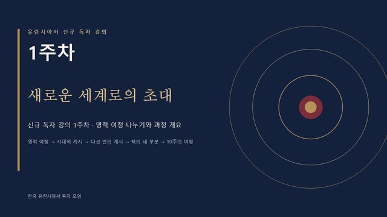
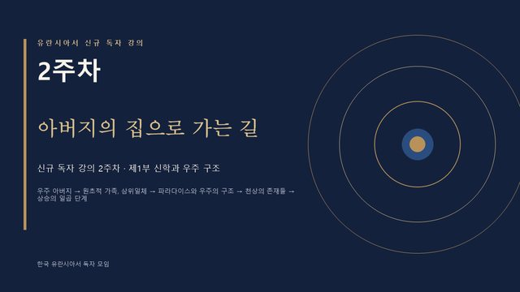
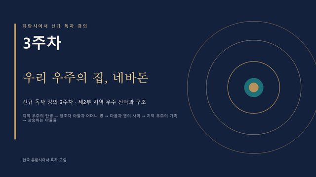
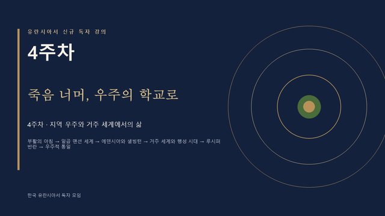
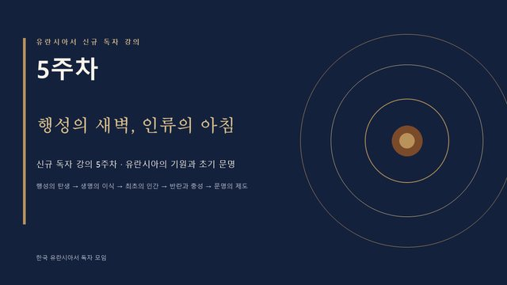
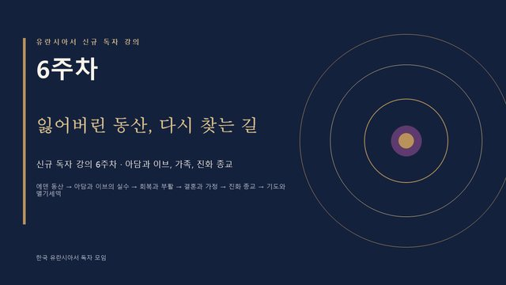
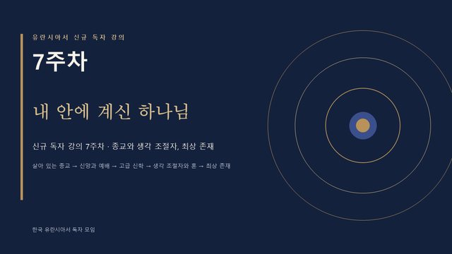
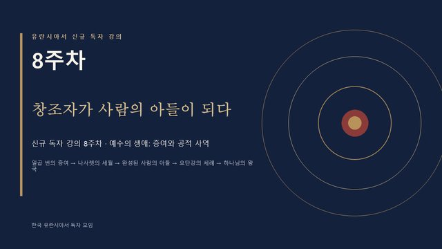
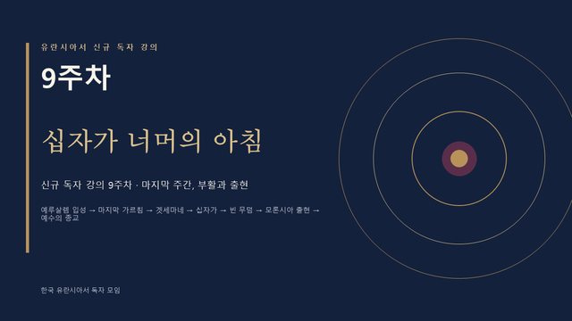
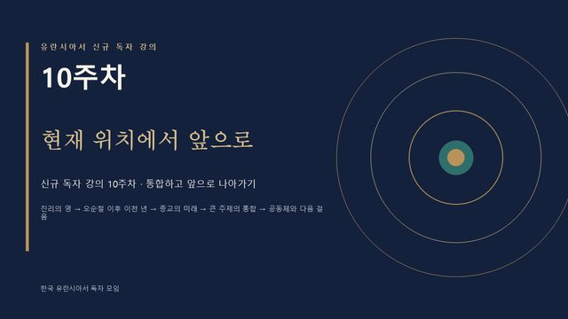

카드를 누르면 그 주의 강의가 열립니다. 화면을 한 번 누르면 낭독이 시작되고, 슬라이드가 저절로 넘어갑니다. (◀ ▶ 버튼이나 키보드 화살표로 앞뒤 이동)

▶새로운 세계로의 초대
영적 여정 나누기와 과정 개요
슬라이드 20장약 28분

▶아버지의 집으로 가는 길
제1부 — 신학, 중앙 우주 구조와 고위 존재들
슬라이드 20장약 29분

▶우리 우주의 집, 네바돈
제2부 — 지역 우주 신학과 구조
슬라이드 20장약 29분

▶죽음 너머, 우주의 학교로
제2부(계속) — 지역 우주와 거주 세계에서의 삶
슬라이드 20장약 28분

▶행성의 새벽, 인류의 아침
제3부 — 유란시아의 기원과 초기 문명
슬라이드 20장약 29분

▶잃어버린 동산, 다시 찾는 길
제3부 — 아담과 이브, 가족, 진화 종교
슬라이드 20장약 29분

▶내 안에 계신 하나님
제3부 — 종교, 고급 신학, 생각 조절자
슬라이드 20장약 29분

▶창조자가 사람의 아들이 되다
제4부 — 예수의 생애: 증여와 공적 사역
슬라이드 20장약 29분

▶십자가 너머의 아침
제4부 — 마지막 주간, 부활과 출현
슬라이드 20장약 28분

▶현재 위치에서 앞으로
통합하고 앞으로 나아가기
슬라이드 20장약 28분